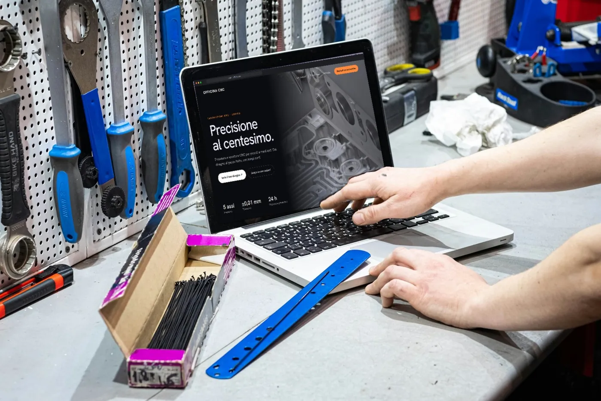
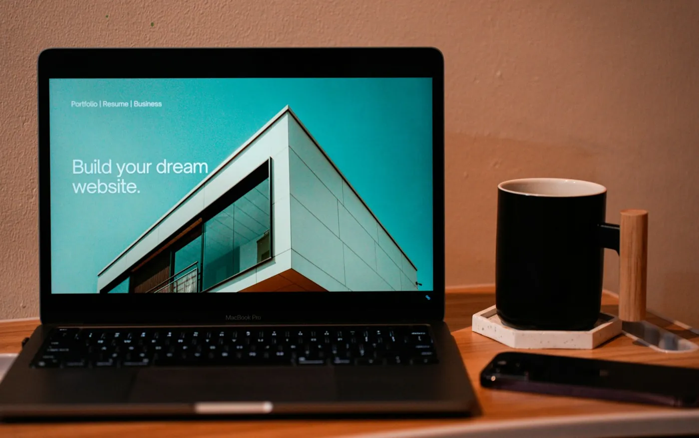
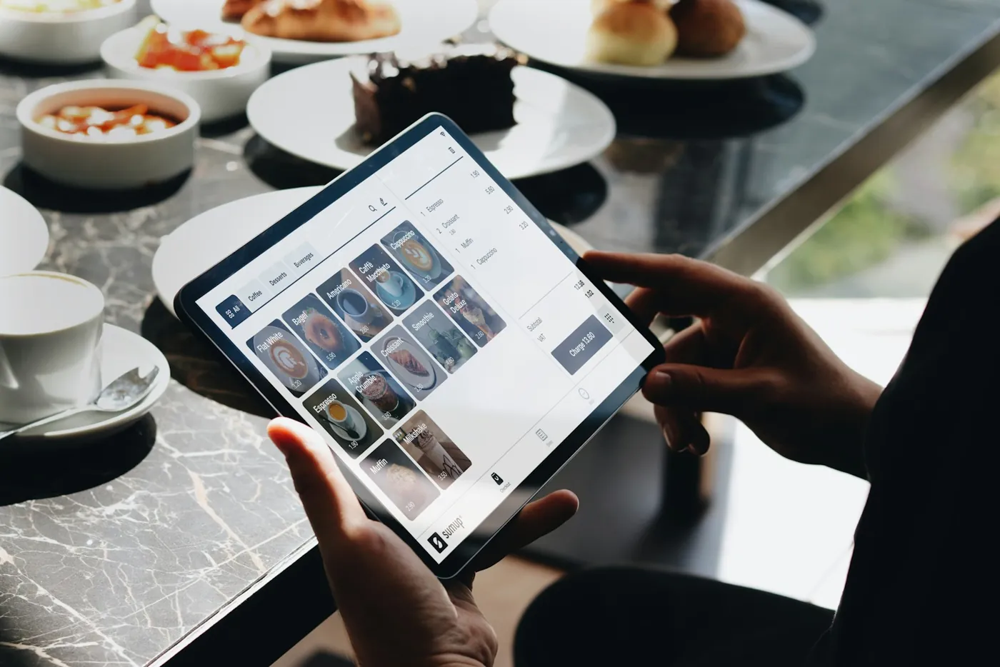

DL Consulting / Lo studio
Uno studio digitale,
a Torino.
DL Consulting progetta siti, contenuti ed esperienze digitali per aziende, professionisti e attività locali. Strategia, design e tecnologia, con un unico interlocutore dall’inizio alla fine.

In cosa crediamo
Quattro idee
che guidano ogni progetto.
Capire prima di costruire.
Ogni progetto parte da domande, non da un template: attività, pubblico, obiettivi. Il design arriva dopo.
La precisione è un metodo.
Misure, tolleranze, controlli: un’abitudine nata in officina che applichiamo a ogni pixel e a ogni riga di codice.
Semplice da usare, difficile da dimenticare.
Un sito deve essere chiaro in tre secondi e riconoscibile per sempre. Tagliamo il superfluo, curiamo i dettagli.
Il lancio è l’inizio.
Un progetto digitale vive: si misura, si migliora, cresce insieme all’attività.
Il nome
Due lettere,
un’idea di laboratorio.
DL, come Digital Lab: un posto dove le idee si provano prima di essere proposte. Prototipi, test e sperimentazioni fanno parte del lavoro quotidiano, non sono un extra.
È lo stesso spirito che trovi nel nostro Digital Lab : un’area dove esploriamo 3D, intelligenza artificiale e nuove interazioni prima di portarle nei progetti dei clienti.
Il metodo
Capire. Costruire.
Continuare a crescere.
Sei fasi, un solo interlocutore. Sai sempre a che punto siamo e cosa succede dopo.
- 01
Analisi
Capire prima di costruire.
Ascoltiamo la tua attività, il pubblico e gli obiettivi. Individuiamo problemi prioritari e opportunità concrete.
- 02
Strategia
Ogni scelta ha un perché.
Definiamo target, posizionamento, messaggio e architettura dei contenuti. Costruiamo il percorso verso il contatto.
- 03
Prototipo
Prima lo vedi. Poi lo perfezioniamo.
Struttura, direzione visiva e interazioni prendono forma in una prima esperienza concreta.
- 04
Sviluppo
La visione diventa un sistema.
Interfaccia, contenuti e movimento lavorano insieme, con attenzione a responsive, performance e accessibilità.
- 05
Lancio
Online, con una base solida.
Controlliamo qualità, collegamenti e punti di conversione. Prepariamo la pubblicazione e gli strumenti di misurazione previsti.
- 06
Evoluzione
Il lancio è un nuovo inizio.
Osserviamo, miglioriamo e sviluppiamo nuove possibilità. Il progetto cresce insieme alla tua attività.
Strumenti
La cassetta
degli attrezzi.
Competenze diverse, un unico standard di qualità.
Design su misura
Identità, UX/UI e prototipi interattivi, disegnati intorno al tuo brand.
Sviluppo
HTML, CSS e JavaScript scritti a mano: siti leggeri, veloci, senza temi preconfezionati.
Motion & 3D
GSAP, scroll storytelling e Three.js quando rendono l’esperienza più chiara, non per effetto.
Contenuti con IA
Testi, immagini e video generati e rifiniti per restare coerenti con il brand.
SEO & performance
Struttura tecnica, velocità su 4G, accessibilità: le basi che Google e le persone premiano.
Crescita
DL Care: aggiornamenti, ottimizzazioni e nuove idee dopo la pubblicazione.
Per chi lavoriamo
Ogni attività.
Una direzione chiara.
Aziende, professionisti e attività locali hanno bisogni diversi. Il punto di partenza è sempre lo stesso: capire prima di costruire.

La lingua dell’officina, tradotta nel digitale.
Nasciamo dal mondo meccanico e CNC: sappiamo cosa significa lavorare al centesimo. Per aziende artigiane e industriali costruiamo siti che spiegano competenze tecniche in modo chiaro e credibile.
- Presentazione di lavorazioni e capacità
- Richieste di preventivo più semplici
- Un’immagine all’altezza della qualità reale

Il tuo valore, riconoscibile a colpo d’occhio.
Consulenti, trainer, studi e freelance: un sito personale che racconta metodo e competenze, e porta le persone giuste al primo contatto.
- Posizionamento e messaggio chiari
- Pagine servizio orientate al contatto
- Coerenza tra sito, LinkedIn e Instagram

Dalla ricerca sullo smartphone alla porta del locale.
Negozi, ristoranti e attività di quartiere: informazioni essenziali, immagini che fanno venire voglia di entrare e un percorso rapido verso chiamata, prenotazione o visita.
- Mobile first, veloce anche su 4G
- Orari, posizione e contatti sempre in vista
- Contenuti social coerenti con il sito
Dove siamo
Base a Torino.
Vicini a chi lavora qui.
Seguiamo aziende, professionisti e attività di Torino e provincia: incontri di persona quando servono, e un contatto diretto su WhatsApp ed email per tutto il resto.
Chi c’è dietro
Lorenzo Delbosco, fondatore.
“Vengo dal mondo meccanico e CNC, dove ogni misura ha una funzione. Ho portato lo stesso modo di ragionare nel digitale. Quando lavori con DL Consulting parli con me, dal primo messaggio al lancio.”
Il prossimo passo
La prossima idea
potrebbe essere la tua.
Raccontami cosa vuoi cambiare. Troviamo insieme il primo passo.
Oppure scrivi a dl.consulting.torino@gmail.com